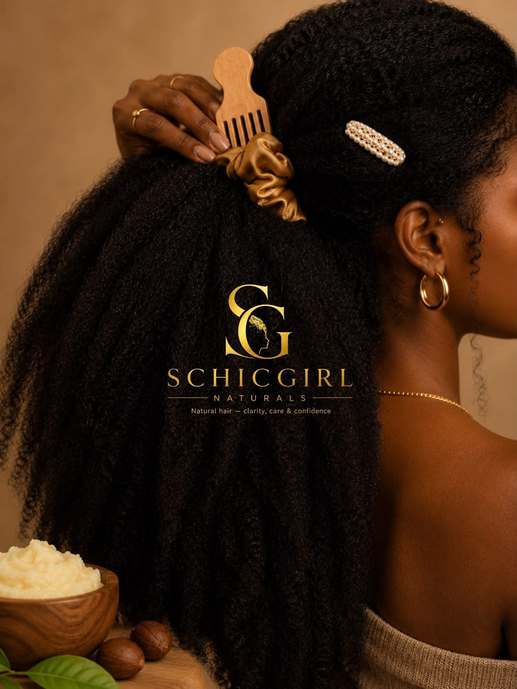

Tes cheveux ne sont pas le problème.
Schicgirl est née d'une certitude simple : la bonne méthode change tout, surtout pour les cheveux crépus.
Rendre les cheveux crépus simples à comprendre.
Schicgirl aide les femmes aux cheveux bouclés, frisés et crépus — surtout le Type 4 (4A, 4B, 4C) — à comprendre pourquoi leurs cheveux sont secs, à construire une routine simple qui tient dans la vraie vie, et à choisir des produits dignes de confiance sans se ruiner.
Pas de jargon. Pas de routine à 12 étapes impossible à tenir. Juste des explications claires, des plans pas à pas et des outils gratuits pour que tu reprennes le contrôle de tes cheveux.

Bonjour, moi c'est Schicgirl 👋
J'ai grandi en pensant que mes cheveux étaient « trop ». Trop secs, trop difficiles, trop longs à coiffer. J'ai essayé tous les produits à la mode, suivi toutes les routines virales — et mes cheveux cassaient quand même.
Le déclic n'est pas venu d'un produit miracle. Il est venu de la compréhension : la porosité, l'hydratation, le scellage, le démêlage en douceur.
« J'ai créé Schicgirl pour donner aux autres femmes le raccourci que j'aurais aimé avoir. »
Nos principes
- 🔍 La compréhension avant les produits Savoir pourquoi bat acheter au hasard. Toujours.
- 🌿 Simple gagne toujours Une routine qu'on tient vaut mieux qu'une routine parfaite abandonnée.
- 👑 Tes cheveux sont normaux Le crépu n'est pas un défaut à corriger.
- 🤝 Honnêteté totale On recommande seulement ce qu'on utiliserait nous-mêmes.
Des outils faits pour le Type 4.
Le raccourci, c'est par ici.
Le Kit Type 4 est gratuit : ta texture, ta porosité, ta première routine.